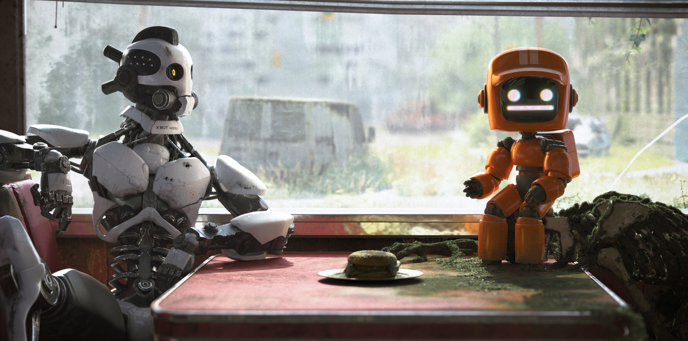
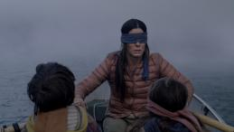

Apresentação

Portfólio
Após largar tudo para se dedicar ao antigo sonho de ser programador, André inicía na universidade aos 34 anos(2019) e mergulha de vez no mundo da tecnologia.
Restante do currículo e contato.